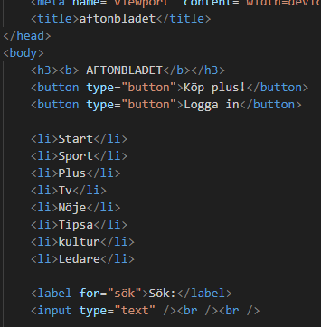
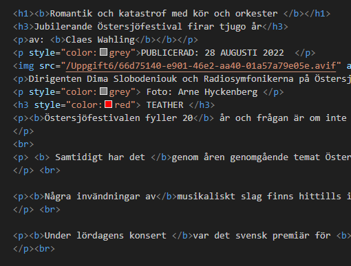
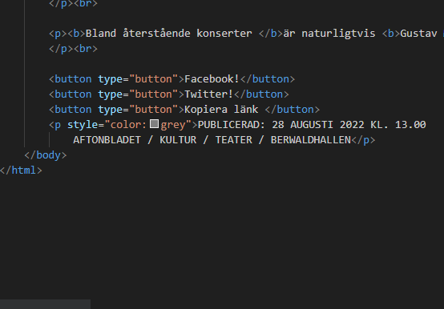

Härma aftonbladets sida. Uppgiften var att ta hjälp av the inspector tool och ta reda på vilka element som hemsidan använde. Därefter själv försöka återskapa sidan så gott det går i ett html document. Där man annat kunde ändra till fetstil och andra färger och storlekar.
Härma en hemsida


För att skapa knappar såsom Aftonbladet hade det så var jag tvungen att använda mig av "button" taggen där man kan skriva in vad som ska stå på knappen och vilket värde den ska ha. Jag gjorde även en lista med olika genrer med hjälp av "li" taggen.

Jag laddade ner samma bild som Aftonbladet hade och länkade samma bild genom “img” taggen. Jag använde mig också av “b” i dem olika “p” taggarna för att efterlikna så bra som möjligt.

Fick lära mig att man kunde använda sig av style inuti en "p" tagg för att ändra färg på texten till något annat.